Incorporating accessibility into the redesign of the dropdown menu in a case study
Role:
UX Researcher
Student in CSCI 1300
Timeline:
1 Week
Project Type:
Case study on accessible components.
CONTEXT
RESEARCH
PROCESS
SOLUTION
LEARNINGS
Context
Dropdown menus are a common UI componenet used across various types of
applications, allowing users to display and choose from a list of
options triggered from a single click or hovering over a component.
In this project, I will analyze multiple examples of the dropdown menu from different applications, examining the component's interactions with user input.
I will then answer the question of how we can create a more
dropdown menu.
Research
In this project, I analyzed three dropdown menus utilized in different
contexts with different user inputs and outputs:
01
Brown University Website
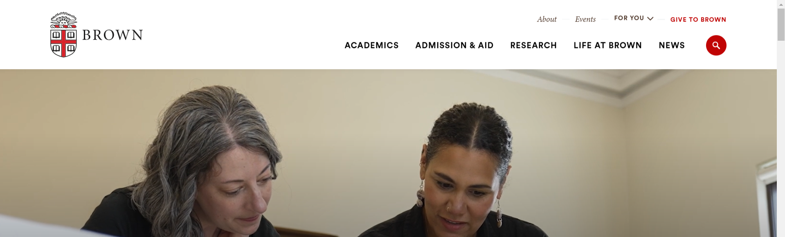
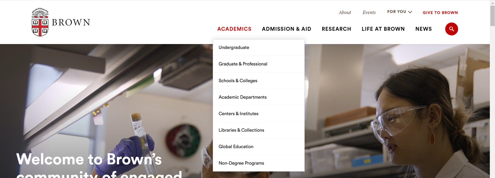
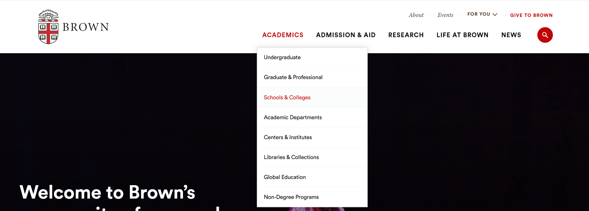
02
Visual Studio Code Desktop App
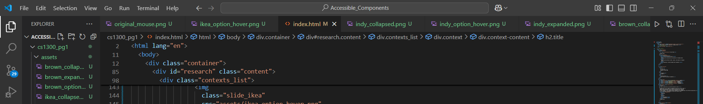
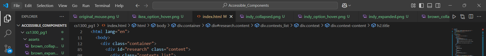
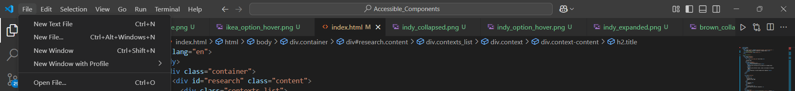
03
The College Hill Independent Website
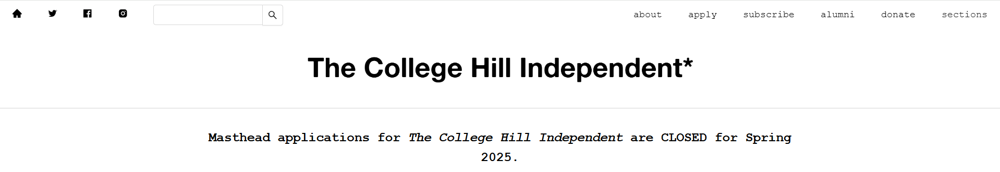
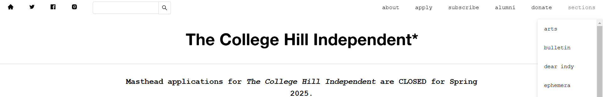
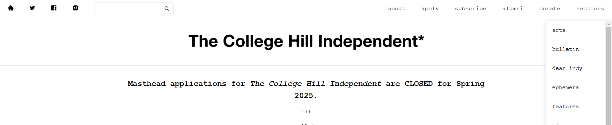
Examaning user interactions inputs and outputs of the dropdown menus:
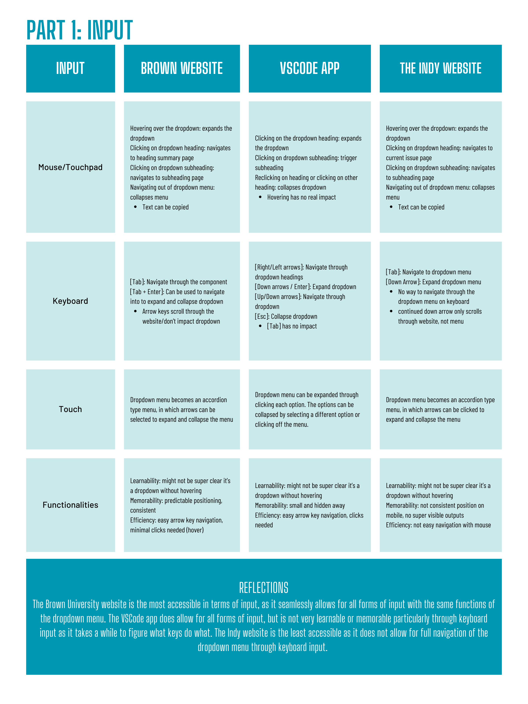
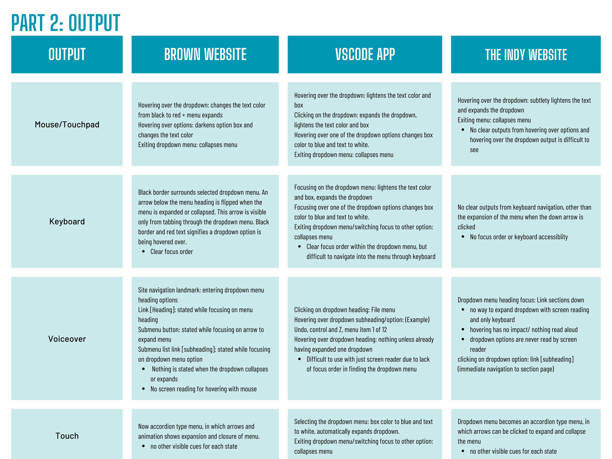
Process
To fully visualize the interactions and accessibility aspects of the
dropdown menu component, I created state models to examine how users
interact with the menu within the context of The Indy/The College Hill Independent website (01). I
create two state models to focus on both mouse and keyboard users.
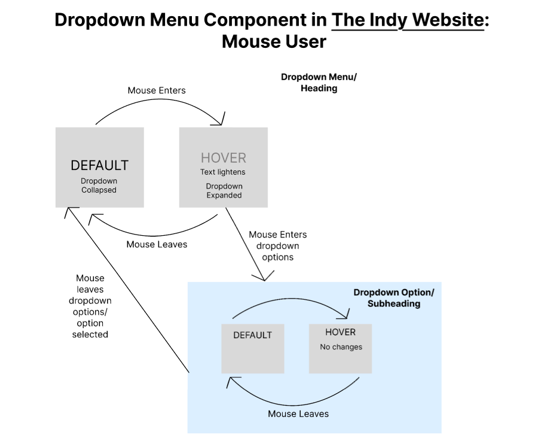
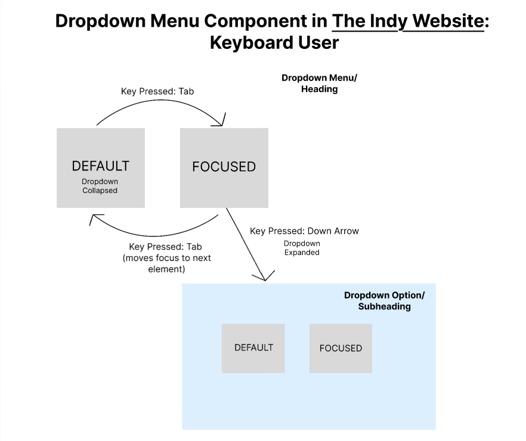
Solution
The final step of the project is the solution. I construct my revised state models for a dropdown menu component for both mouse and keyboard users.
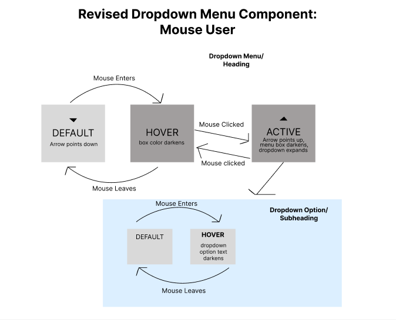
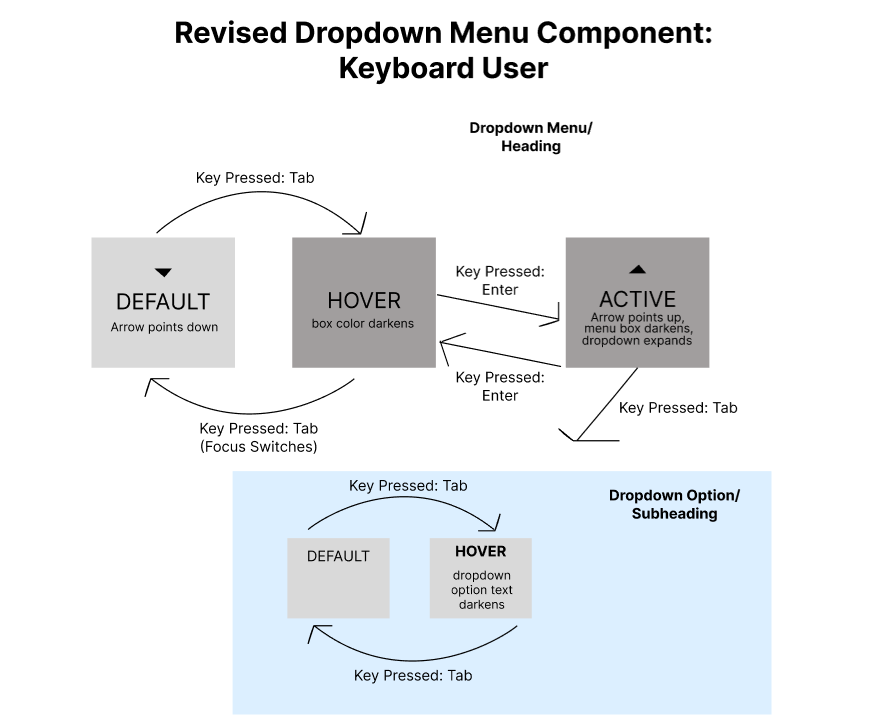
Using the state models and the research conducted, I use Figma to construct a revised component within the context of the Independent College Hill website. Two annotated designs were created:
Initial state (before user interaction):
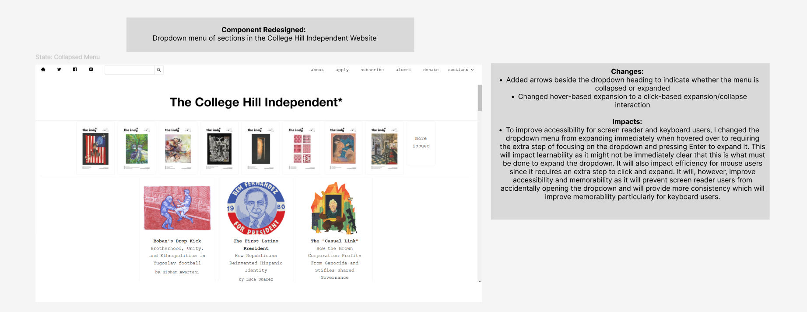
Active state (expanded dropdown menu):
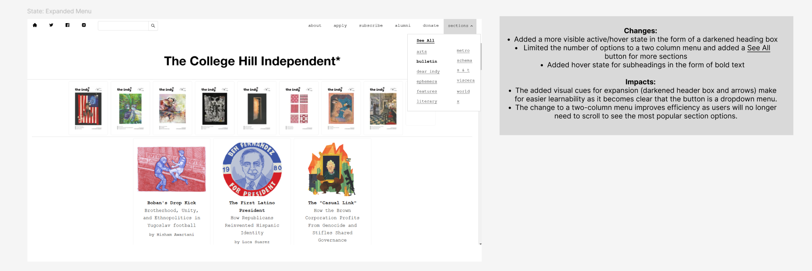
Final Zoomed-in Revisions (Designed in Figma):
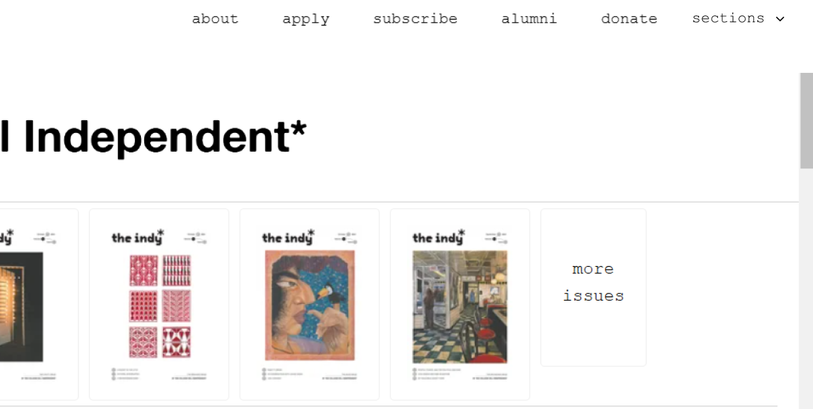
Learnings
Observations from Original Components
The Brown University dropdown menu component did well in terms of accessibility across the input forms, allowing for multiple ways to expand and collapse the dropdown menu for both keyboard and mouse pad users. I implemented this similarly in my design by allowing keyboard and/or mousepad interactions to be used to access the menu in similar ways.
The Visual Studio Code app design hit similar points in accessibility focused on click-based interaction over hover-based. I decided to implement this into my design on the dropdown menu. I changed the College Hill Independent dropdown menu to be click-based interactions only, where users had to click on the section heading to expand the menu.
Click-based input has a positive impact on users with impairments as people who use only keyboards, touchscreens, or assistive devices might not have access to the hover-based interactions.
Keeping in mind the observations from the College Hill Independent and the other two components, I think mouse users are the most commonly prioritized in the process of creating components. This impacts the user experience, particularly for non-mouse users, as inputs and outputs for those users might not be taken into consideration in the design or development as much. This is what seems to have happened in the College Hill Independent website, where the keyboard accessibility was not fully developed when compared to mouse accessibility.
Inaccessibility in the input aspect for the College Hill Independent component can negatively impact users if they don’t have access to their mousepad and need to use the dropdown menu. If the dropdown menu is not accessible via keyboard, users with motor impairments or broken touchpads might be unable to navigate through.
Accessibility Considerations in Final Redesign
Relying on hover-based interactions can be difficult to use for populations with motor impairments as well as for users with screen readers and thus, I considered this in my design.
One accessibility consideration not completely addressed by the components I observed that I ended up accounting for was the two-column menu size instead of a longer one so that users wouldn’t need to find a way to scroll down to see all the options.
My design solves a “mismatch” by implementing multiple ways to expand the menu instead of focusing on the implementation of a “default” that might not be accessible for keyboard or screen reader users.